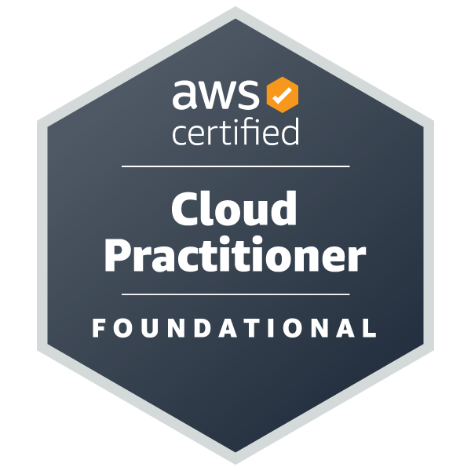
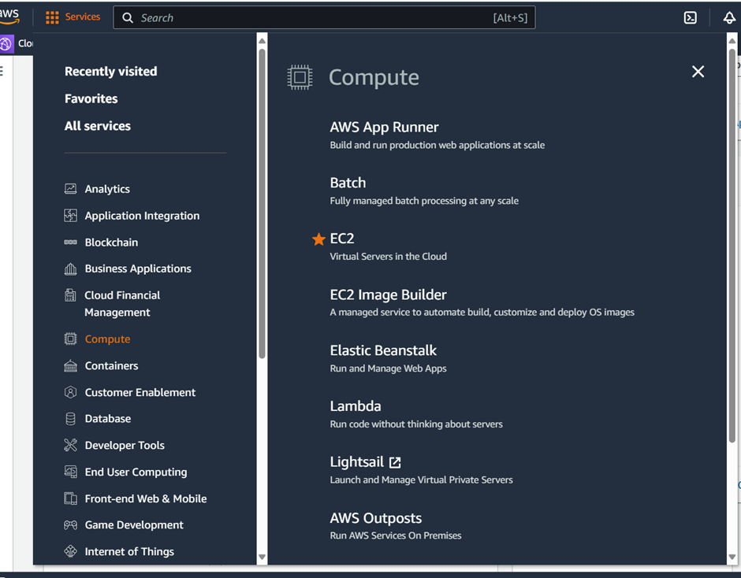
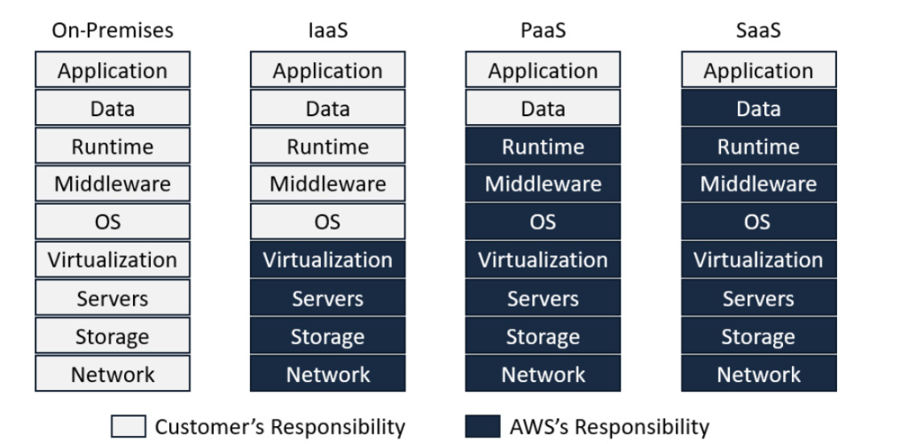

AWS Exam Prep: Key Takeaways and Essential Services

Hello there,
I recently passed the Amazon Cloud Practitioner CL02 exam and wanted to share my experience and insights with others who may be preparing for the same exam. I'll cover the resources I used, my study strategy, and the lessons I learned along the way.
Understanding the Syllabus
The first mistake I made was not thoroughly reviewing the syllabus. The exam covers four domains:
- Cloud Concepts (26% of the exam)
- Define the benefits of the AWS Cloud
- Identify design principles of the AWS Cloud
- Understand the benefits of and strategies for migration to the AWS Cloud
- Understand concepts of cloud economics
- Security and Compliance (25% of the exam)
- Understand the AWS shared responsibility model
- Understand AWS Cloud security, governance, and compliance concepts
- Identify AWS access management capabilities
- Identify components and resources for security
- Cloud Technology and Services (33% of the exam)
- Define methods of deploying and operating in the AWS Cloud
- Define the AWS global infrastructure
- Identify AWS database services
- Identify AWS network services
- Identify AWS storage services
- Identify AWS artificial intelligence and machine learning (AI/ML) services and analytics services
- Identify services from other in-scope AWS service categories
- Billing, Pricing, and Support (16% of the exam)
- Compare AWS pricing models
- Understand resources for billing, budget, and cost management
- Identify AWS technical resources and AWS Support options
Preparation Resources
To prepare for the exam, I utilized the following resources, which you may find helpful as well:
- AWS Cloud Essentials: A course available on the Skillbuilder site, which provides a comprehensive introduction to AWS Cloud concepts.
- AWS Certified Cloud Practitioner Exam Guide: A digital book by Rajesh Daswani, published in 2021, covering fundamental theories and services. Note that machine learning concepts are not extensively covered, so refer to the official AWS documentation for that topic.
- Official AWS Documentation: For machine learning concepts, refer to the official AWS documentation.
- Mock Tests: O'Reilly provided 350 practice questions, powered by PearsonVUE, the organization conducting the exam.
My Preparation Journey
I'll share my honest preparation journey to provide a realistic perspective. Initially, I believed completing the AWS Cloud Essentials course would be sufficient preparation. I started the course three months before the exam, but I struggled to focus and only completed 15-20% of the course. With the exam date seeming distant, I put the course on hold. However, a month later, I recommitted to completing the course and finished it within a week. This experience taught me the importance of consistent effort and time management in exam preparation.
Honest Reflection
Honestly, I wasn't retaining much information from the video lectures, despite my initial enthusiasm. As someone without a technical background, I found myself getting lost in the technical jargon and assuming I understood concepts when, in fact, I didn't. This realization prompted me to adjust my study plan. I switched to traditional reading and adopted a slower pace, focusing on grasping the fundamental IT concepts. This approach helped me build a stronger foundation and ensured I wasn't just passively watching videos without truly comprehending the material.
Adapting My Study Approach
I transitioned to my second resource, the AWS Certified Cloud Practitioner Exam Guide, and set a goal to complete 3% of the book daily. However, I only managed to finish 20% in the first month. Determined to catch up, I dedicated a week to intensive studying, completing the remaining 80% with unwavering focus. This immersive approach allowed me to thoroughly understand and review crucial concepts essential for grasping AWS services. Interestingly, I even relearned the fundamental difference between memory (volatile, random access) and storage (non-volatile, persistent), which highlighted the importance of revisiting basics during exam preparation. Such minor deviations can significantly alter our understanding and perception of any technology.
Although my study plan wasn't unfolding as expected, I adapted by incorporating practical exercises into my reading routine. As I progressed through the book, I practiced the AWS services mentioned in the exercises, which greatly enhanced my understanding of the concepts. By seeing the services in action, I solidified my knowledge and gained hands-on experience. Additionally, the chapter-ending questions helped me assess my comprehension and identify areas requiring further attention. This combination of theoretical knowledge and practical application proved invaluable in my exam preparation.
Final Preparations and Mock Tests
After completing the book just two days before the exam, I shifted my focus to mock tests on the PearsonVUE site. I attempted around 10 mock tests, consistently scoring above 80%, surpassing the required 70% mark. This boosted my confidence, leading me to believe I would easily pass the exam. However, I later realized that I had fallen into a pattern, as many questions were similar, allowing me to complete each test within half an hour. This experience taught me a valuable lesson: for effective preparation, it's essential to practice diverse questions from various platforms, as question styles and phrasing can vary significantly, even for the same concept. This helps identify knowledge gaps and avoids overconfidence.
Improvement Plan for Next Level Exam
To enhance my preparation for the next level exam, I will focus on the following key areas:
- AWS Documentation: Utilize the official AWS documentation ((link unavailable)) as a primary resource, leveraging Amazon Q (AI chat tool) to clarify any doubts.
- Comprehensive Service Coverage: Ensure I cover as many AWS services as possible, taking the time to understand each service's overview, features, and use cases.
Key Takeaways for Next Level Exam Preparation
To further enhance my AWS knowledge, I will:
- Identify similar services and note their differences, using real-life examples to illustrate the distinctions. For instance:
- Amazon Inspector (security assessment and compliance)
- AWS CloudWatch (performance monitoring and optimization)
- Leverage Amazon Q to clarify any doubts and gain a deeper understanding of each service
- Avoid excessive time spent on testing services, saving it for advanced-level preparation to minimize costs and optimize time
- Focus on attempting a variety of questions, including those on PearsonVUE, and skip repetitive questions to ensure continuous learning and improvement
By implementing these strategies, I aim to refine my AWS knowledge, develop a more nuanced understanding of similar services, and optimize my exam preparation approach.
Key AWS Services to Focus On
Now let's go through some of the services in one line which is very essential and you can expect at least one question from each of them.
- S3: Amazon S3 is a scalable, durable, and secure object storage service for storing and retrieving data.
- EC2: Amazon EC2 is a virtual server service that provides scalable, on-demand computing resources for running applications.
- VPC: Amazon VPC is a virtual networking service that allows you to create a secure, isolated network environment for your AWS resources.
- Amazon SageMaker: Amazon SageMaker is a fully managed machine learning service that enables data scientists to build, train, and deploy models quickly.
- Amazon RDS: Amazon RDS is a managed relational database service that simplifies setup, operation, and scaling of databases.
- CloudWatch/Config/Trail:
- CloudWatch: Monitors AWS resources and applications in real-time.
- Config: Tracks resource configurations and changes.
- CloudTrail: Logs API calls and account activity.
- AWS Lambda: AWS Lambda is a serverless compute service that runs code in response to events, without managing servers.
- Trusted Advisor: Trusted Advisor provides personalized recommendations to optimize AWS resource usage, security, and performance.
- SNS/SQS:
- SNS: Amazon SNS is a messaging service that sends notifications to subscribers.
- SQS: Amazon SQS is a message queue service that enables decoupled, fault-tolerant applications.
- CloudFront: Amazon CloudFront is a content delivery network (CDN) that accelerates distribution of static and dynamic web content.
- AWS IAM (Identity and Access Management): AWS IAM manages access to AWS resources and services, enabling secure control of user identities, permissions, and credentials.
- CloudFormation: AWS CloudFormation allows you to create and manage infrastructure as code, using templates to define and deploy AWS resources consistently and reliably.
Apart from this try to log in to your console and read at least one liner about all the services in AWS as you can see in the below image.

AWS Shared Responsibility Model
In the accompanying illustration, the allocation of security duties between AWS and the customer is depicted. It is important to note that the Responsibility Model is predicated on the distinction between security of the cloud, a responsibility that lies with AWS, and security in the cloud, which is the responsibility of the customer.

Questions
To understand your current knowledge you can try these 10 sample questions and good luck for your exams:
1. Which of the following Amazon S3 storage classes can help you reduce the cost of storage for objects that are infrequently accessed, and yet still give you instant access when you need it?
a. Amazon S3 Standard-IA
b. Amazon S3 Glacier
c. Amazon S3 Glacier Deep Archive
d. Amazon S3 Standard
2. Which AWS service enables you to register new domain names for your corporate business requirements?
a. AWS DNS
b. AWS Route53
c. AWS VPC
d. Amazon Macie
3. You are currently running a test phase for a new application that is being developed in-house. Your UAT testers will need to access test servers for 3 hours a day, three times a week. The test phase is supposed to last 5 weeks. You cannot afford any interruptions to the application while the tests are being run. Which EC2 pricing option will be the most cost-effective?
a. On demand
b. Reserved
c. Spot
d. Dedicated Host
4. Your company is looking to move all its applications and services to the cloud but would like to migrate workloads in stages. This would require you to ensure that there is connectivity between the on-premises infrastructure and the applications you deploy on AWS for a while. What cloud deployment model would you need to establish?
a. Private cloud
b. Public Cloud
c. Hybrid Cloud
d. Multi-cloud
5. Which service is free if you are using the amazon snowball edge service form Aws
a. Initial Days 10 free trial for the services
b. Data migration from on premise to snowball edge
c. Data migration from snowball edge to AWS
d. Last 10 days of the service
6. Which configuration feature of the AWS Auto Scaling service enables you to define a maximum number of EC2 instances that can be launched in your fleet?
a. Auto Scaling group
b. Auto Scaling Launch Configuration
c. Auto Scaling MaxFleet Size
d. Auto Scaling policy
7. You need to run certain SQL queries to analyze data from a streaming source and conduct analysis. Which of the following services can you use to analyze stream data in real time?
a. Amazon SQS
b. Amazon Kinesis Data Streams
c. Amazon Kinesis Analytics
d. Amazon Athena
8. Which service enables developers to upload code to AWS and have the necessary infrastructure provisioned and managed to support that application?
a. Amazon Elastic Beanstalk
b. Amazon CloudFormation
c. Amazon Cloud9
d. AWS OpsWorks
9. Which AWS service enables you to track user activity and API usage in your AWS account for auditing purposes?
a. AWS Config
b. AWS CloudWatch
c. AWS CloudTrail
d. AWS Trusted Advisor
10. Which type of firewall solution integrates with Amazon CloudFront and ALBs to offer protection against common web exploits such as cross-site scripting and SQL injection?
a. AWS WAF
b. AWS Shield
c. AWS X-Ray
d. AWS Firewall Manager
Answers
- a. Amazon S3 Standard-IA (Infrequent Access)
- b. AWS Route53
- a. On demand (since the test phase has variable usage and requires no interruptions)
- c. Hybrid Cloud (connectivity between on-premises infrastructure and AWS)
- b. Data migration from on premise to snowball edge (initial data transfer is free)
- a. Auto Scaling group (defines maximum number of EC2 instances)
- c. Amazon Kinesis Analytics (analyzes stream data in real time)
- a. Amazon Elastic Beanstalk (provisions and manages infrastructure for uploaded code)
- c. AWS CloudTrail (tracks user activity and API usage for auditing)
- a. AWS WAF (Web Application Firewall, integrates with CloudFront and ALBs)